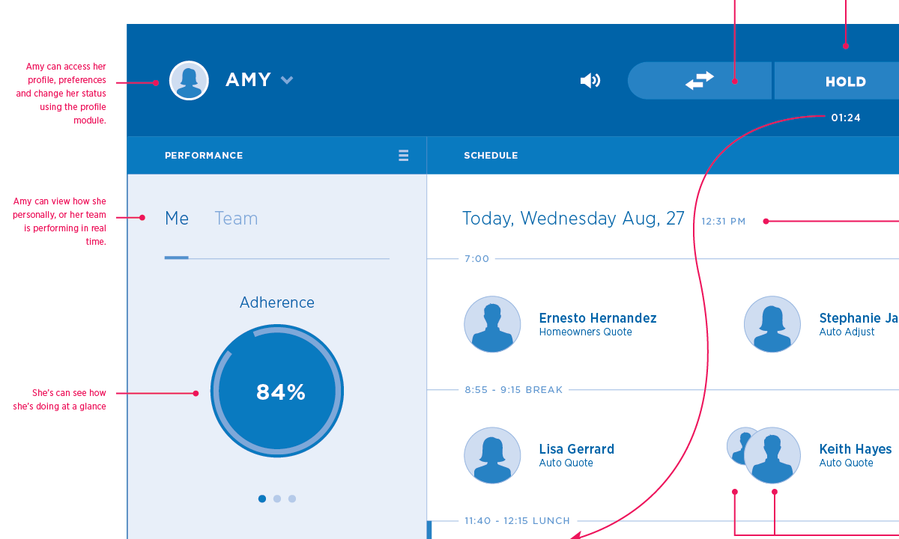
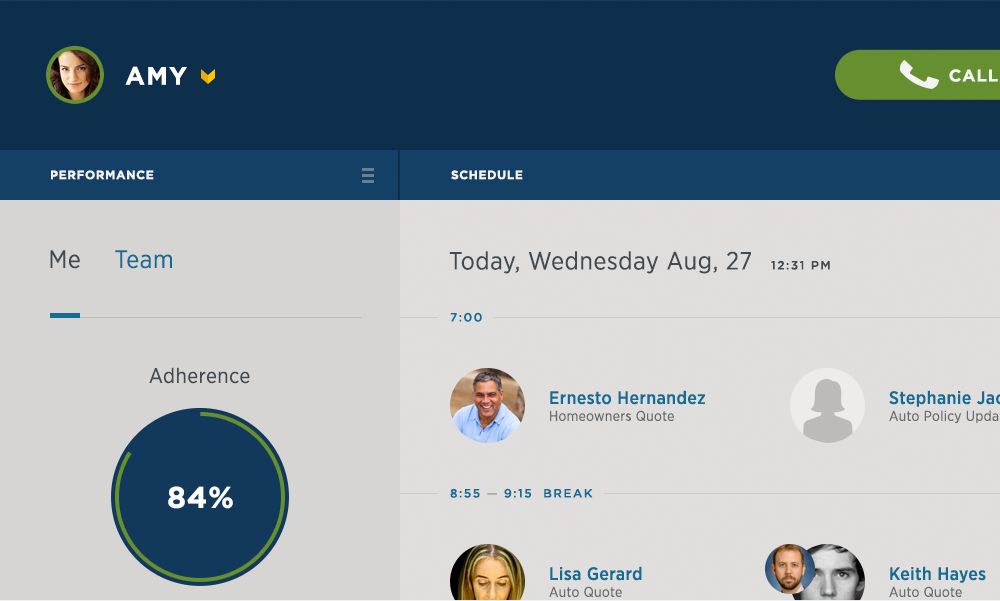
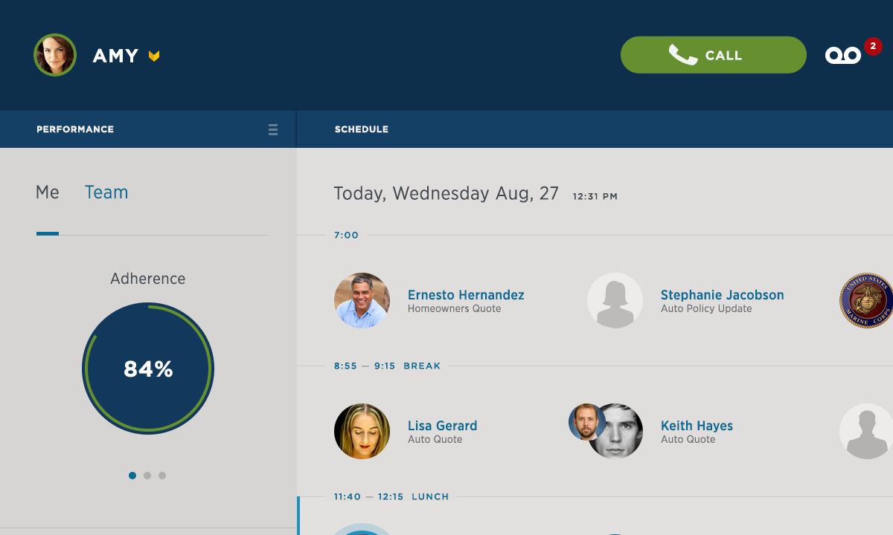
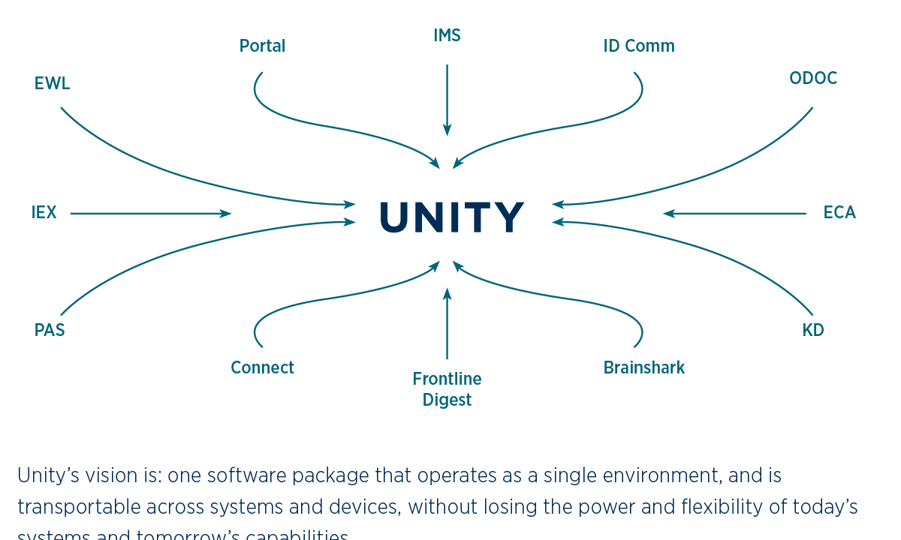

Hi Meriah, I'm David Karle.
I am
-
a husband and father of three.
-
an amateur theologian and avid reader.
-
a Creative Designer at USAA.
I believe design is both …
-
a catalyst for continuous change.
-
a guardian and stewardof the brand.
and …
For design to be truly effective it needs to successfully balance these two goals. That's why "we've never done it that way before" and "that will never work" aren't any worse than "better to ask for forgiveness than permission" and "run fast, play hard, be disruptive."
Design must transform business with grace.
I make
Wireframes
Even though I draw and paint, I rarely sketch designs by hand. I often just start with wires in Illustrator. I find the process of elimination is easier in a tool like this where I can make endless copies and variations of ideas and shapes until I reach what I think is working best. My wireframes are usually very detailed and nail down a concept pretty well before moving on to full color designs.
Comps
There are lots of new tools to make comps with, like Sketch or Affinity Designer. But I'm a designosaur, and I still find Photoshop to be the most effective tool for me. Over the years, I've developed habits using Photoshop that help me produce quality work quickly. One strange habit is that I try not to use too many layer groups, and I also order my layers from bottom up, instead of top down. Weird, I know.
Prototypes
I like to work with a Front-end Developer when prototyping. I prefer to code actual HTML pages that look and feel like a real app. I find that it doesn't take much longer to produce and more than pays for itself in quality. Some new animation tools like Origami, Form and Pixate are interesting. But these are really best for creating examples for developers rather than preparing an entire scenario for usability. When I don't have a developer to work with, I'll just code my own prototype. It isn't pretty under the hood, but the user never knows the difference. I'm code capable, but definitely not code competent.
Creative Briefs
For most projects, communicating the final concept with clarity is paramount. Each brief takes a different form depending on our customer and the project. I will often design a brief in InDesign, but sometimes will do a slide deck in Keynote or PowerPoint. How a brief is made is not as important as what it says.
I've learned …
that the most important part of being a designer is communicating the power of an idea to another mind. Design always wants to unite people behind a common purpose, and in that there is something really sacred about it.
I love and hate this about design simultaneously.
Some answered questions
Do you have a specialty or something you’re known for?
This is a question best asked of people I work with. But I imagine they would say that I have a way with exposing the real problem that needs to be solved with artifacts that everyone can gather around. I'm willing to put my half-thought-out work on display for my team to give me feedback.
What activities do you find take up the majority of your day?
On a good day — making artifacts like wires, comps and prototypes. But many days are spent coordinating with various stakeholders. It's a vital part of using design to build common purpose, and something I believe designers need to contribute to.
Do you have a secret skill that you don't use at USAA but could contribute?
Hmm, maybe. I do some painting and illustration work at home, and wouldn’t mind putting that to use at work. But I’d need more time than I get on a typical project to do this. We do have people at work that are much better than I am, and I'd give the nod to them first.
What digital part of the USAA experience makes you proud?
Honestly, very little. Years ago a group of designers, including myself led the effort on the first iPad App release in 2011. Our work was very well received by the company and the members and even transformed internal processes and the way we published web content. All that has since changed, and there’s sadly little left to be proud of since that initial release.
What piece of software do you always have open?
Instant Messenger. Staying in touch with team members is more important than anything else. However, there are times to shut down IM and just crank out some wires and comps.
I’m both nervous and excited about the recent changes to design at USAA. We’re really glad you’re here and I’m looking forward to talking more with you this year. I’m here to help. Let me know how I can.
David
You can also check out my personal site. Here's a good place to start.